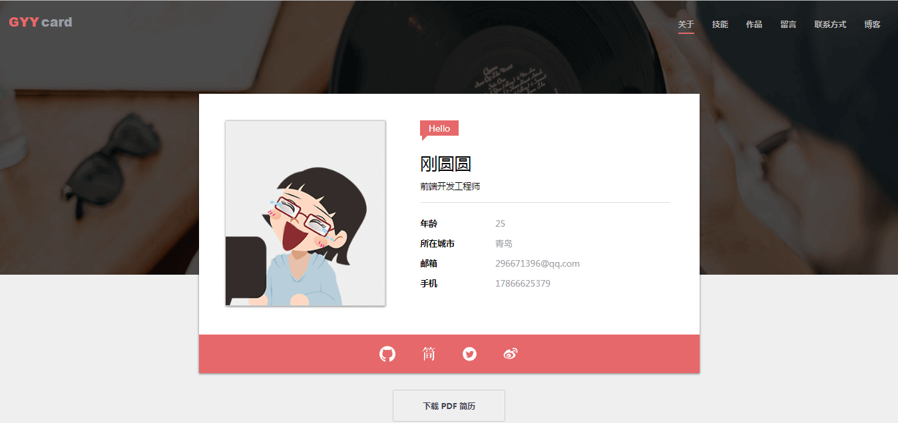

项目经历
CNode 社区
- 关键词：Vue、jQuery、Vue Router、Axios、vue-cli
- 描述：该项目使用 Vue 技术还原了 CNode 社区，该项目利用组件化开发思想，以 vue-cli创建项目模板，利用 Axios 获取数据，使用 Vue Router 进行前端路由的切换及传参，并使用 watch 监听路由的变化，避免出现懒加载无法跳转的情况。
- 源码链接：https://github.com/Gangyuanyuan/CNode
- 预览链接：https://gangyuanyuan.top/CNode/dist/index.html
Canvas 在线涂鸦
- 关键词：JavaScript、Canvas、ES6、响应式
- 描述：该项目使用原生 JS 实现，主要调用HTML 5 的 Canvas API，实现了绘画、调色、选择画笔粗细、橡皮擦、一键清空等功能，并支持将图画下载到本地。使用响应式布局，方便在 PC 及手机端使用。
- 源码链接：https://github.com/Gangyuanyuan/canvas
- 预览链接：https://gangyuanyuan.top/canvas/index.html
GitHub 榜单
- 关键词：jQuery、ajax、移动端
- 描述：该项目是由 jQuery 实现的一个 GitHub 排行榜，主要面向移动端。该项目基于 GitHub 提供的 API 实现，包含了前端项目排行，前端高产用户排行和项目搜索等功能。该项目支持屏幕滚动加载数据，并利用定时器实现了节流。
- 源码链接：https://github.com/Gangyuanyuan/GitHub-charts
- 预览链接：https://gangyuanyuan.top/GitHub-charts/index.html
个人网站
- 关键词：JavaScript、Tween.js、模块化 MVC、LeanCloud
- 描述：该项目是使用原生 JS 制作的个人网站。在页面加载前使用 CSS 伪元素和 CSS 动画实现 loading 效果，该项目使用 Swiper.js 实现作品轮播展示， 利用 Tween.js 实现了页面缓动，并用 LeanCloud 实现了无刷新留言功能，最后将代码进行模块化 MVC 封装。
- 源码链接：https://github.com/Gangyuanyuan/resume-4
- 预览链接：https://gangyuanyuan.top/resume-4/index.html
CSS3 画皮卡丘
- 关键词：CSS3、JavaScript、jQuery、响应式
- 描述：该项目中的动漫皮卡丘部分完全由 CSS 绘制，并利用 JS 遍历 preview 标签内的代码将其显示在页面上，可以看到皮卡丘动态生成的过程，并实现了 CSS 代码高亮效果。同时该项目添加了速度控制按钮，用户可以自己调节动画绘制速度。
- 源码链接：https://github.com/Gangyuanyuan/animation-Pikachu
- 预览链接：https://gangyuanyuan.top/animation-Pikachu/index.html
键盘导航
- 关键词：JavaScript
- 描述：该项目是由原生 JS 实现的一个简洁方便的导航网站，通过遍历 hash 赋予各键对应的地址，并通过监听用户键盘动作访问各网站。用户可以自行编辑各按键对应的网站，也可在搜索框实现搜索功能。
- 源码链接：https://github.com/Gangyuanyuan/myBookmarks
- 预览链接：https://gangyuanyuan.top/myBookmarks/index.html
关于我
个人经历